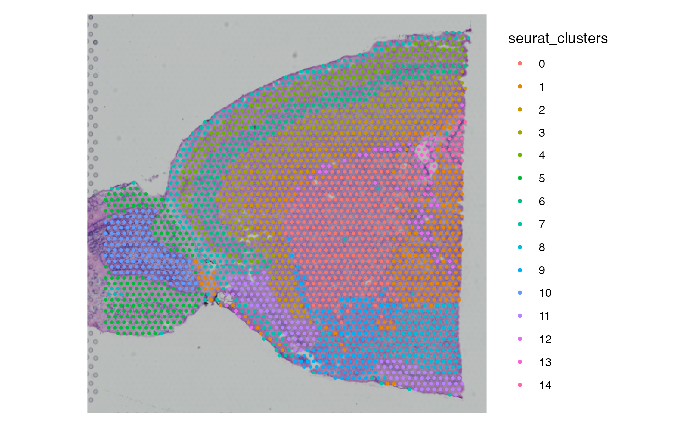
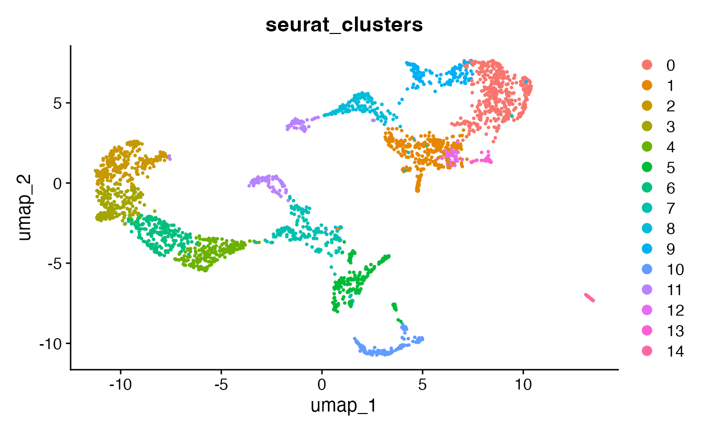
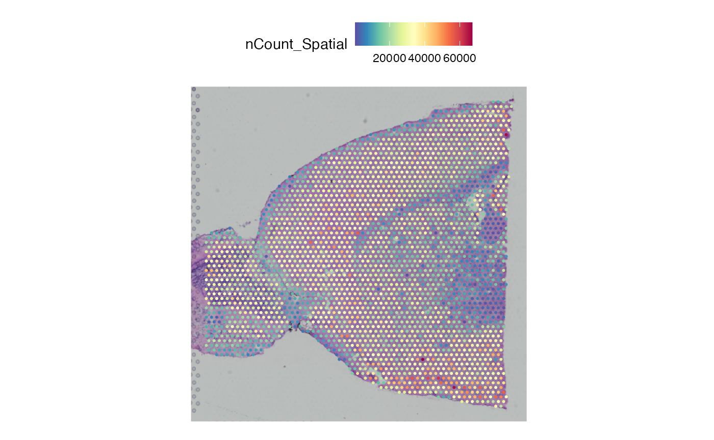
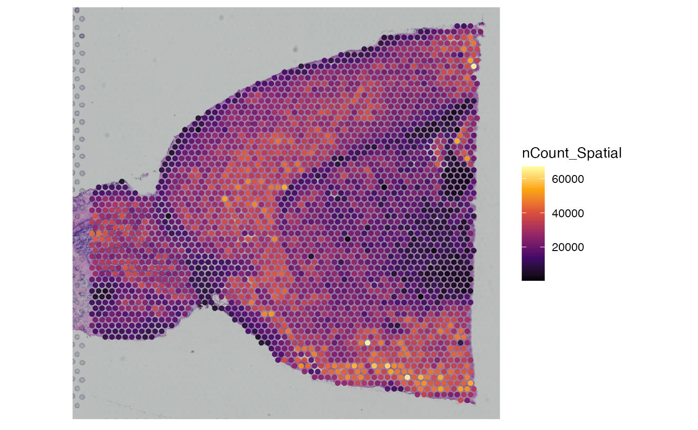

package-compatibility.RmdThis tutorial demonstrates how to convert Seurat or AnnData/h5ad
object to SPATA2. SPATA2 provides the convenient function
asSPATA2() to load objects from the mentioned packages.
First, an exemplary 10X Visium dataset from the mouse brain is loaded using SeuratData. We are following the Seurat tutorial in the following.
# load packages for this tutorial
library(Seurat)
library(SeuratData)
library(tidyverse)
library(SPATA2)
library(SPATAData)
# create an example Seurat object
# install and load data with SeuratData
InstallData("stxBrain")
brain <- LoadData("stxBrain", type = "anterior1")
# process
brain <- NormalizeData(brain, assay = "Spatial")
brain <- SCTransform(brain, assay = "Spatial")
brain <- RunPCA(brain, assay = "SCT", verbose = FALSE)
brain <- RunUMAP(brain, reduction = "pca", dims = 1:30)
brain <- FindNeighbors(brain, reduction = "pca", dims = 1:30)
brain <- FindClusters(brain, verbose = FALSE)
# left plot
SpatialPlot(brain, group.by = "seurat_clusters")
# right plot
DimPlot(brain, group.by = "seurat_clusters")
For proper conversion information about certain aspects are required.
The sample_name argument uniquely identifies the object
and dataset within a group of multiple SPATA2 objects.
The platform argument specifies the platform used, which
is integral to several SPATA2 functions as it stores details about the
underlying spatial method of the data. For a comprehensive understanding
of what constitutes a platform or spatial method in SPATA2, refer to the
documentation with ?spatial_methods. Although the default
setting is platform = 'Undefined', it is recommended to
specify this argument with a valid input. This specification is
necessary because the platform used cannot always be accurately inferred
from a Seurat object alone.
## [1] "MERFISH" "SlideSeqV1" "Undefined" "VisiumSmall" "VisiumLarge"
## [6] "VisiumHD" "Xenium"The assay_name argument indicates which assay from the
Seurat object should be used. In many cases, only one assay
is present, making the default setting of assay_name = NULL
sufficient. However, note that Seurat and SPATA2 handle assays slightly
differently. For example, using the SCTransform() function
in Seurat creates a new assay within the Seurat object.
Despite these differences, both contain gene expression data.
names(brain@assays)## [1] "Spatial" "SCT"In SPATA2, assays are strictly sorted by molecular modality and thus,
only one assay of molecular modality gene can exist. In this
scenario, one has to choose the assay to use for conversion. Related
matrices can always be added afterwards via
addProcessedMatrix(). Once you picked the assay of
interest, define the molecular modality. Optionally, you use either of
‘gene’, ‘metabolite’ or ‘protein’. Read more
on how SPATA2 deals with molecular variables here.
Seurat objects contain spatial data in slot @images,
which is a list that can contain multiple slots. Similarly to assays, if
this list contains more than one SpatialImage objects, the
one to use must be specified. Furthermore, for appropriate scaling to
image resolutions the scale factor to use might need to be specified.
This is usually the case for Visium experiments.
Eventually we can convert the object with asSPATA2().
Note, that we specify assay_name since the
Seurat object contains two assays. However, we must not
specify img_name since only one image (anterior1
is present).
# two assays
names(brain@assays)## [1] "Spatial" "SCT"
# one image
names(brain@images)## [1] "anterior1"
# use assay Spatial
spata_object1 <-
asSPATA2(
object = brain,
sample_name = "mouse_brain",
platform = "VisiumSmall",
img_scale_fct = "lowres",
assay_name = "Spatial",
assay_modality = "gene"
)
show(spata_object1)## An object of class SPATA2
## Sample: mouse_brain
## Size: 2696 x 31053 (spots x molecules)
## Memory: 445.4 Mb
## Platform: VisiumSmall
## Molecular assays (1):
## 1. Assay
## Molecular modality: gene
## Distinct molecules: 31053
## Matrices (2):
## -counts (active)
## -data
## Registered images (1):
## - anterior1 (599x600 px, active, loaded)
## Meta variables (10): sample, orig.ident, nCount_Spatial, nFeature_Spatial, slice, region, nCount_SCT, nFeature_SCT, SCT_snn_res.0.8, seurat_clusters
# use assay SCT
spata_object2 <-
asSPATA2(
object = brain,
sample_name = "mouse_brain",
platform = "VisiumSmall",
img_name = "anterior1",
img_scale_fct = "lowres",
assay_name = "SCT",
assay_modality = "gene"
)
show(spata_object2)## An object of class SPATA2
## Sample: mouse_brain
## Size: 2696 x 17668 (spots x molecules)
## Memory: 523.08 Mb
## Platform: VisiumSmall
## Molecular assays (1):
## 1. Assay
## Molecular modality: gene
## Distinct molecules: 17668
## Matrices (3):
## -counts (active)
## -data
## -scale.data
## Registered images (1):
## - anterior1 (599x600 px, active, loaded)
## Meta variables (10): sample, orig.ident, nCount_Spatial, nFeature_Spatial, slice, region, nCount_SCT, nFeature_SCT, SCT_snn_res.0.8, seurat_clusters
# left plot
SpatialPlot(brain, features = "nCount_Spatial")
# right plot
plotSurface(spata_object1, color_by = "nCount_Spatial", pt_size = 1)
For demonstrating Scanpy/Squidpy compatibility, we provide a
preprocessed 10X Visium dataset from the mouse brain. It was exported as
h5ad file from Python using
AnnData.write_h5ad().
library(anndata)
library(SPATA2)
library(tidyverse)
# required for anndata R package; path to python (with anndata installed)
reticulate::use_python("/my/path/to/python3")
# adjust to your directry
dir = "/Users/simonf/PhD/TEMP/"
curl::curl_download(
url = "https://www.dropbox.com/s/pfpqyg1ds1d52f3/stab_wound_injury_anndata.h5ad?raw=1",
destfile = paste0(dir,"mouse_brain_adata.h5ad")
)h5ad files can be loaded into R by using the
read_h5ad() function from the anndata R package.
The object is converted to SPATA2 using asSPATA2().
spata_object <- asSPATA2(adata_object, sample_name = "mousebrain", platform = "VisiumSmall", modality = "gene")If no AnnData layers are named, adata.X will be imported
as normalized matrix. Custom AnnData layers can be added as either count
matrix (count_mtr_name), normalized matrix
(normalized_mtr_name), or scaled matrix
(normalized_mtr_name) in the SPATA2 object, for instance as
asSPATA2(adata, count_mtr_name = "count_matrix"). That’s it
- the SPATA2 object can be used for any downstream analyses, such as
spatial annotation or spatial trajectory screening.